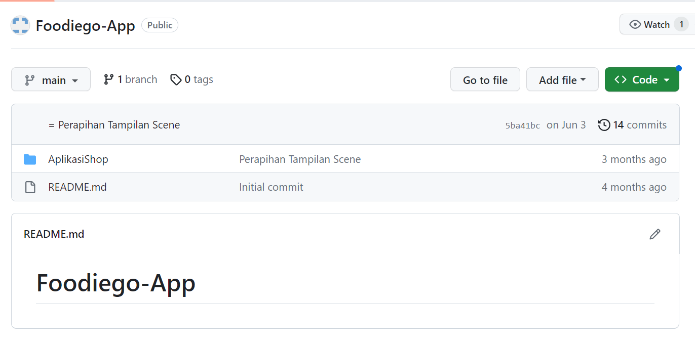

Hello, I'm Natalia
Student at Hasanuddin University
Faculty of Mathematic and Science, Majoring in Information System

About Me
Saya Dewa Ayu Eka Natalia Pratiwi biasa di panggil Natalia, lahir di Samarinda tanggal 8 Desember. Aktif mengikuti beberapa kegiatan sejak TK, mulai dari Paduan Suara, Modelling, Cerdas cermat biologi, Desain Poster, KTI, dan Juga KSN Informatika. Selain itu pernah menjadi sekretaris OSIS selama dua periode di SMA Negeri 5 Samarinda. Dan juga menjadi pendamping sekbid 9, selain itu saya juga memiliki hobi di bidang musik, kesenian dan juga travelling.
Portofolio
Nama: Dewa Ayu Eka Natalia Pratiwi
Email: dewaayu0445@gmail.com
NIM: H071221021
Tempat Tanggal Lahir: Samarinda, 08 Desember 2004
Jenis Kelamin: Perempuan
| Institusi | Tahun |
|---|---|
| SMP Negeri 5 Samarinda | 2016-2019 |
| SMA Negeri 5 Samarinda | 2019-2022 |
| Universitas Hasanuddin | 2022-Sekarang |
| Posisi | Periode |
|---|---|
| Sekretaris OSIS | 2019-2020 |
| Wakil Sekretaris OSIS | 2020-2021 |
| Panitia HUT SMALA | 2019 |
| Anggota MPK | 2021-2022 |
What is my Skills?
DesainMemiliki keahlian mendesain baik secara manual maupun digital, dan menguasai beberapa tools desain yakni ibis paint, canva, phonto, dan figma. |
Programming LanguagesMemiliki kemampuan pemahaman pada beberapa bahasa pemrograman yaitu Java dan Python. |
ToolsMemiliki keahlian menguasai beberapa tools yaitu Visual Studio Code, NetBeans, Photoshop, dan Figma. |
EditingMemiliki kemampuan editing gambar juga video, selain itu menguasai beberapa tools editing yakni Lightroom, Capcut, Filmora, dan Inshot. |
My Project
CURDMerupakan project yang menggunakan JavaFX sebagai bahasa pemrogramannya dan NetBeans sebagai tools untuk membuat CRUD tersebut. Project pembuatan CURD ini juga terhubung dengan database yang ada di localhost. Project ini dibuat untuk menyelesaikan tugas akhir mata kuliah Pemrograman Berorientasi Objek di semester 2. |
|
FoodieGoMerupakan project aplikasi sederhana yang ditujukan untuk memudahkan pembeli dalam memesan makanan tanpa harus mengantre, serta memudahkan karyawan untuk tidak mengantar buku menu saat restoran sedang ramai. Project ini dibuat untuk menyelesaikan tugas akhir Praktikum Pemrograman Berorientasi Objek di semester 2. |
 |